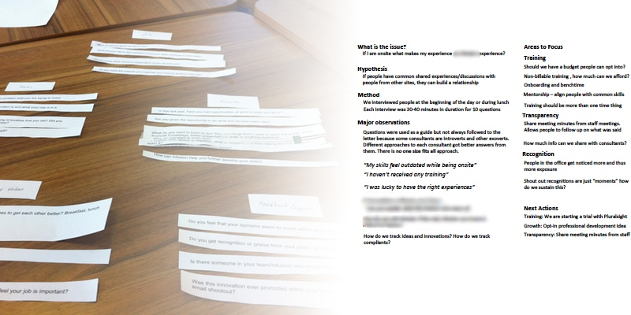
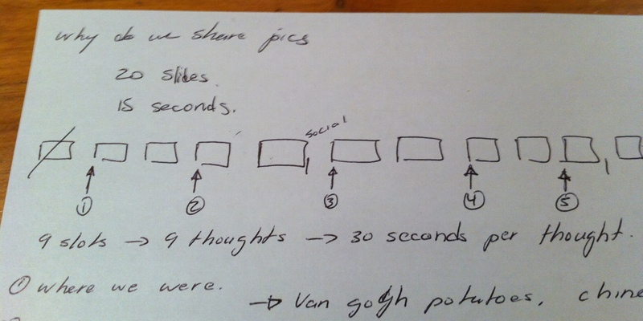
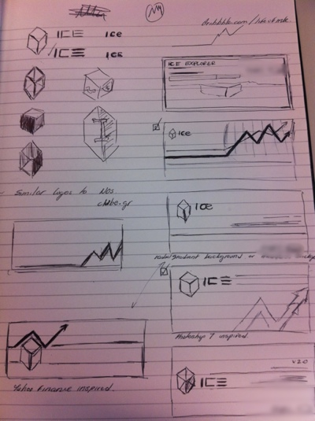

Taking ideas into Reality
Code meets design
I graduated Computer Engineering from the University of Waterloo and since then I have been fortunate enough to have worked in New York, NY and London, UK. Below are a few of the companies I have had the pleasure of working at:


I write on topics relating to the world of design and work life on my personal blog, "Designing Logic".
I am always looking for opportunities to help people interact with technology better. For a few months I volunteered in an after school activity to teach kids ages 9-11 how to code as part of the Code Club program.
This webpage is a portfolio showcase of my UX experience.
Design isn’t just wire frames or visual style; it’s about the product as a whole.
Sahil Lavingia
UX
Modern Grocers: App Concept
Skills Storyboarding, Wireframes, Prototyping

Wireframes
For the complete wireframes (1.5MB) provide a clearer insight of the individual screens of the application

It's 5pm and who's going to make dinner!?
This storyboard deals with a couple working together to overcome how to buy groceries to cook at home at the last minute

Time Saving Features
From meal idea recipes, item locators and self scanning, the app gives you the power to manage your instore experience

Be a Grocery Shopping Hero
By streamlining the process of finding food to checkout, the app will make you the grocery shopping hero in a flash
Storyboarding
The hours between 4pm to 7pm at a grocery store can be quite daunting with the number of people and with rushing around it is easy to miss an ingredient or two. This app aims to make the process of grocery shopping more efficient.
In this concept story we have, Richard and Olivia, a couple living in the big city. Richard is an architect and Olivia is an accountant. As young professionals living in the city, a midweek homemade dinner at home can be challenging due to the lack of time. We follow their process in this story to see how they use this app to get their dinner for the night.
For a PDF version of this storyboard please click this link
Planbow: App Concept
Skills Sketching, Composites, Prototyping

The Idea
Finding new things to do or chaining events together for a perfect birthday or date is hard if you have to travel around to much. Planbow was my idea to create a service that aggregates Foursquare data to prove you with the best options for your activities. I needed to create a proof of concept to see if this was viable.

Proof of Concept
London's restaurant scene is alive and well. Finding where to go eat in London can be a challenge due to the number of restaurants. I created this map of my recently visisted restaurants back in 2012. This was a proof of concept to see how Azure websites work and how to integrate with MapBox and Foursquare APIs by using KnockoutJS
Sketches
Sketches allow your ideas to materialize quickly. Annotations on the sketches help the team formulate the final concepts when taking it to the next level of wireframing/prototyping.
Composites
Using Photoshop, I created sample screens in the application colour scheme. This allows people/stakeholders to asset the concept in higher fidelity.
User Research
Skills Analysis, Card Sorting, Interviews

Employee Improvement Survey
I teamed up with a colleague to help investigate and analyze the issue of with employee satisfaction. Instead of guessing about what the problem was, we decided to conduct interviews with the 20 employees to find out how they were feeling. To come up with the questions we each came up with questions we thought were important then we grouped them together using card sorting. The results of the survey lead to some changes in training initiatives and helped upper management understand the problem better.
Application Usability Research
To validate the changes in the pilot program of the pricing system, surveys with 10 users were done. A set questionaire based on the likert scale was asked after each person completed the three (3) main user journeys in the application. The three journeys were setup, pricing and report generation. The results of the research resulted in simplifying the workflow and securing extra work to provide more user feedback on their actions as confirmation.
Presentations
Skills Public Speaking
The Idea
To build my skills in public speaking, I volunteered to be part of the Ignite London #7 event in Shoreditch, London to speak about “Why we take pictures of food”. This talk was based on the Ignite presentation method of 20 auto-rotating slides in 5 minutes.

Planning
With slides changing automatically every 20 seconds, you have to have a clear concept and flow to your delivery. Using chunking methods I was able to group and organize the information in an entertaining way for telling a story
Logo Design
Skills Visual Design

Sketching
Initial ideas ranged from different people voicing different desires. Using that as a base, I created some quick logos and showed them around to the team. General feedback was used to pick the winner from the pack.

Iterative
One of the favourite design was to have the ICE cube logo to look like a shield. However with the lack of brand colour and feel of a financial system this design was scraped.
{kind=link}
Final Product
The final design is shown below with the red background. This fits more inline with the client's brand colours. The mountains are a functional design additive as it provides visual appeal but also simulates charts and graphs that appear in the system.